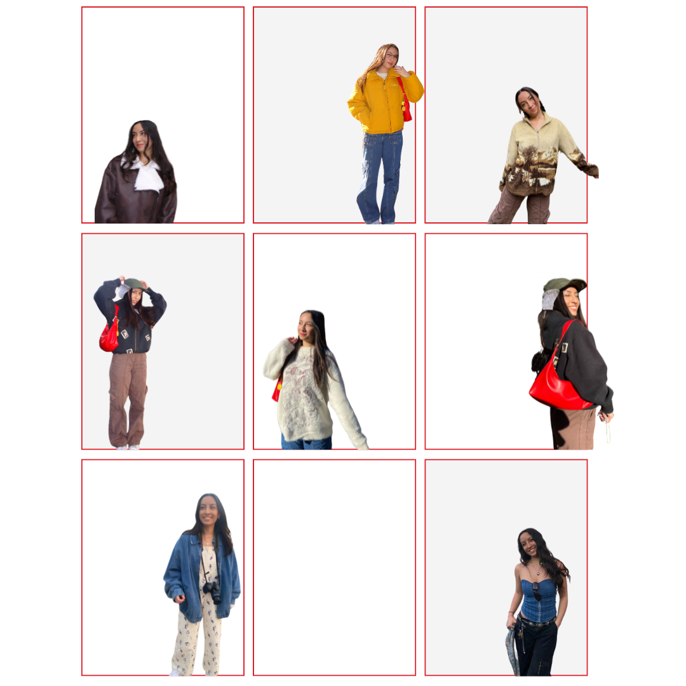

A LITTLE ABOUT ME
HI, I'M
MEGAN.

I'm a NYC-based creative working across design, film, photography, animation, and technology.
I graduated from UC Berkeley with a degree in Data Science, and that analytical side still influences how I approach creative work and problem-solving.
Outside of work, I thrive in collaborative environments and love being around people, whether that’s sharing ideas, building meaningful connections, or just meeting new friends. I spend free time experimenting in the kitchen, staying active with yoga and the gym, exploring NYC, or finding inspiration through music, food, travel, and everyday moments.